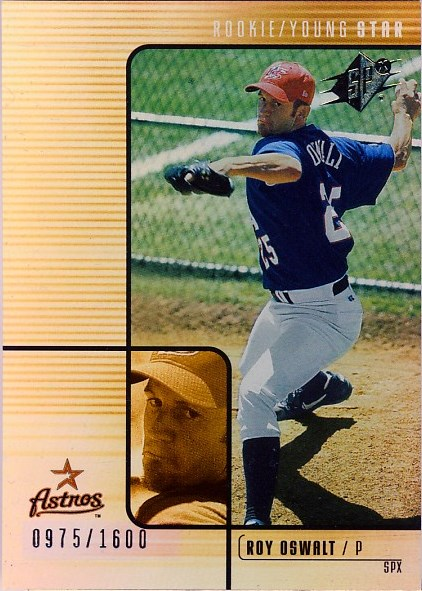
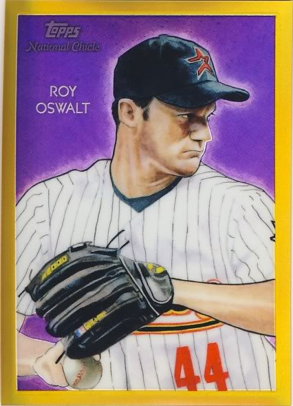
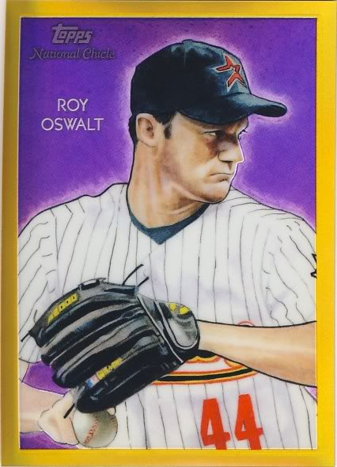
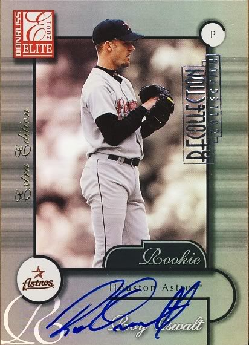
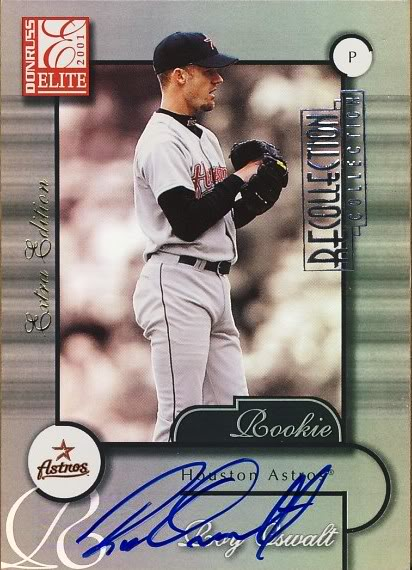

All cards listed are numbered one of one (11 Superfractors). Text in red indicates a sold card.
The Definitive Roy Oswalt Collection
 

 

- 2002 Donruss Rookies Recollection Autographs #38 01 DR Black
- 2002 Topps Gallery Press Plates #134 Magenta
- 2003 Leaf Certified Materials Mirror Black Autographs #70
- 2004 Leaf Certified Materials Mirror Black #166
- 2004 Leaf Limited Threads Jersey Prime #137 A
- 2005 Bowman Chrome SuperFractors #121 BGS 9
- 2005 Diamond Kings Recollection Autographs Gold #RO2 03 DK
- 2005 Diamond Kings Recollection Autographs Silver #RO1 02 DK
- 2005 Finest Printing Plates Black #119
- 2005 Finest SuperFractors #119 BGS 9.5
- 2005 Finest Xfractors White Framed #119
- 2005 Leaf Century Signature Post Marks Platinum #44
- 2005 Leaf Certified Materials Mirror Autograph Black #60
- 2005 Leaf Certified Materials Mirror Autograph Red #60
- 2005 Sweet Spot Signatures Dual Black Stitch #PO w/J.Peavy
- 2005 Topps Turkey Red Suede #55 BGS 9
- 2006 Bowman Chrome SuperFractors #139
- 2006 Finest SuperFractors #87
- 2006 Topps Chrome Gold Superfractors #81
- 2006 Topps Turkey Red Autographs Suede #RO
- 2006 Topps Turkey Red Framed Printing Plates Magenta #377
- 2006 Topps Turkey Red Suede #377
- 2006 Ultimate Collection Tandem Materials Signatures Logo #CO w/R. Clemens 1/1
- 2007 Bowman Heritage Red #125
- 2007 Finest Superfractors #112
- 2007 Topps Allen and Ginter Mini Wood #86
- 2007 Topps Chrome Superfractors #153
- 2007 UD Black Pure White Autographs #RO
- 2008 Bowman Chrome Superfractors #107 BGS 9.5
- 2008 Topps Co-Signers Hyper Plaid Silver #68b w/L. Berkman
- 2008 Upper Deck Premier Gold #50
- 2009 Finest Printing Plates Cyan #118
- 2009 Finest Printing Plates Yellow #118
- 2009 Finest Framed Xfractors #118
- 2011 Bowman Chrome Superfractors #144
- 2011 Topps Chrome Superfractors #125
- 2011 Topps Finest Superfractors #39